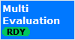
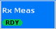

To turn the measurement on or off, select the control softkey and press [ON | OFF] or [RESTART | STOP]. Alternatively, right-click the control softkey.
See also: "Measurement Control"
The "Tx Measurement" is included in the Bluetooth measurement application. To access the measurement, press the softkey "Multi Evaluation" in the Bluetooth measurement or select the tab "Multi Evaluation".

The softkey shows the current measurement state. Additional measurement substates can be retrieved via remote control.
The "Rx Measurement" is included in the Bluetooth measurement application. To access the measurement, press the softkey "Rx Meas" in the Bluetooth measurement or select the tab "Rx Meas".
Non-signaling Rx measurements are only supported by R&S CMW100/CMW with MUA. Option R&S CMW-KD611 is required.

The softkey shows the current measurement state. Additional measurement substates can be retrieved via remote control.